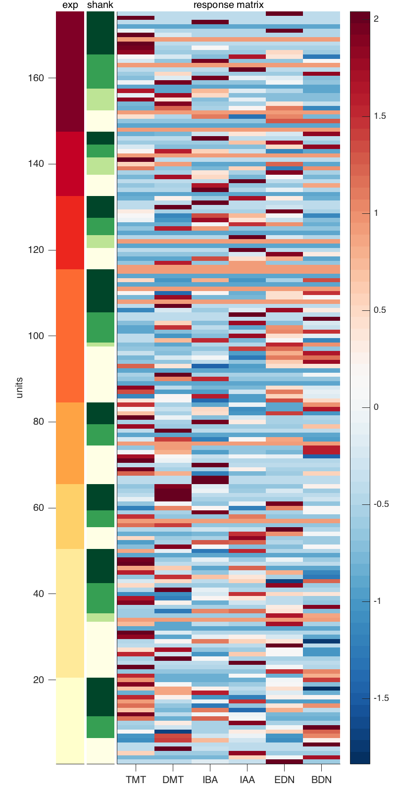
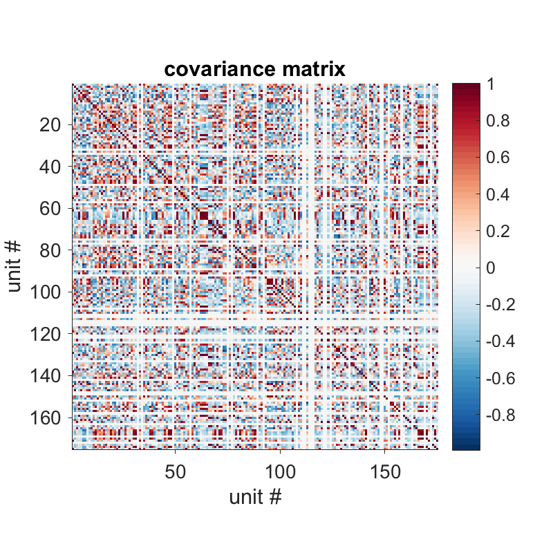
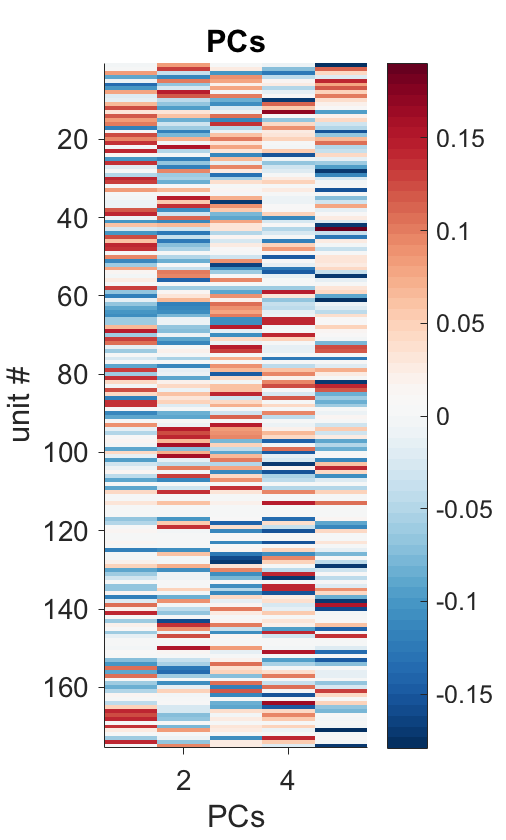
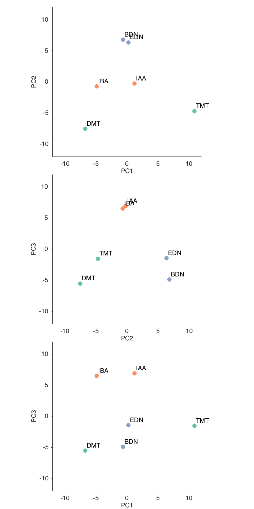
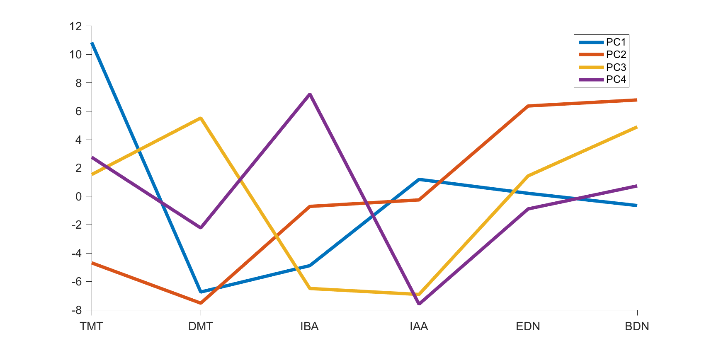
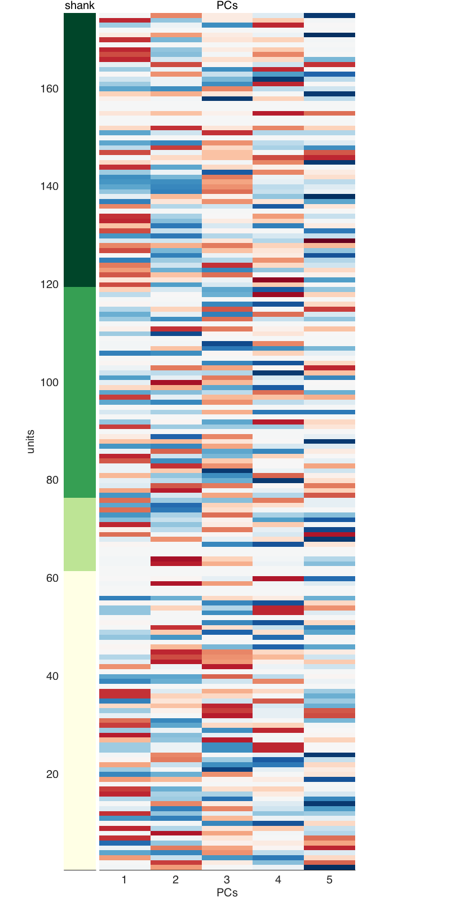
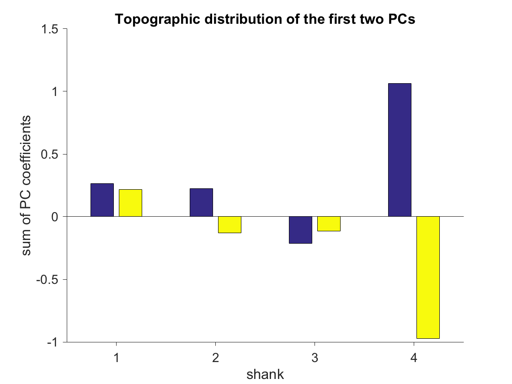

Using PCA and ICA to understand the olfactory coding space
Contents
- Collect responses
- The z-scored responses
- The covariance between neuron's responses
- Eigenvalues and expained variances of each PC
- The PCs of this neural space
- The coding space
- What does this PCA representation really means?
- Any topography out there?
- Which PCs are really significant? Let's shuffle it!
- Using all trials instead of their average
Collect responses
Let's use PCA to find subsets of neurons that represent odors distinctly, I will use the responses to 2,4,5-trimethylthiazole, 4,5-dimethylthiazole, isobutylacetate, isoamylacetate, exanedione and butanedione. All odors in a chemical pair smell very alike, but dimethylthiazole that smell like thiazole, however it doesn't smell a lot like TMT. Now, I will consider only the average response of each unit to an odor during the first sniff. And I will Z-score the responses of each unit.
odorToUse = [8 10 11 12 13 7]; idxNeuron = 1; for idxExp = 1:length(List) for idxShank = 1:4 for idxUnit = 1:length(exp(idxExp).shank(idxShank).cell) aur = []; responsesSpiCo = []; responsesTiCo = []; indicatore = []; idxOdorLoop = 1; for idxOdor = odorToUse aur(idxOdorLoop) = exp(idxExp).shank(idxShank).cell(idxUnit).odor(idxOdor).aurocMax(1); rspOn(idxOdorLoop) = exp(idxExp).shank(idxShank).cell(idxUnit).odor(idxOdor).fullCycleDigitalResponsePerCycle(1); responsesSpiCo(:,idxOdorLoop) = exp(idxExp).shank(idxShank).cell(idxUnit).odor(idxOdor).fullCycleAnalogicResponsePerCycleAllTrials(:,1); responsesSpiCo(:,idxOdorLoop) = responsesSpiCo(:,idxOdorLoop) - exp(idxExp).shank(idxShank).cell(idxUnit).bslSpikeRate(1); responsesTiCo(:,:,idxOdorLoop) = exp(idxExp).shank(idxShank).cell(idxUnit).odor(idxOdor).smoothedPsth(:,4*cycleLengthDeg:5*cycleLengthDeg); idxOdorLoop = idxOdorLoop + 1; end indicatore = find(aur>=0.5); %indicatore = find(rspOn > 0); if ~isempty(indicatore) %...zscore popActivitySpCoNoZ(idxNeuron,:,:) = responsesSpiCo; [dim1, dim2] = size(responsesSpiCo); responsesSpiCo = responsesSpiCo(:); responsesSpiCo = zscore(responsesSpiCo); responsesSpiCo = reshape(responsesSpiCo, dim1, dim2); [dim1, dim2, dim3] = size(responsesTiCo); responsesTiCo = responsesTiCo(:); responsesTiCo = zscore(responsesTiCo); responsesTiCo = reshape(responsesTiCo, dim1, dim2, dim3); popActivitySpCo(idxNeuron,:,:) = responsesSpiCo; popActivityTiCo{idxNeuron} = responsesTiCo; cellOdorLog(idxNeuron,:) = [idxExp, idxShank, idxUnit]; %keep a log idxNeuron = idxNeuron + 1; end end end end popActivitySpCoMean = squeeze(mean(popActivitySpCo,2)); [coeff, score, latent,~,explained] = pca(zscore(popActivitySpCoMean'));
All right, now I will Z-score all responses across units and then I will delete all units that don't have spikes during the stimulus window.
A = popActivitySpCoMean'; [n,m] = size(A); AMean = mean(A); AStd = std(A); B = (A - repmat(AMean,[n 1])) ./ repmat(AStd, [n, 1]); Bnans = sum(B); B(:,isnan(Bnans)) = []; cellOdorLog(isnan(Bnans),:) = [];
The z-scored responses
And this is what the z-scored responses look like (and the experiment and shank each unit is from)
odorTicks = 1:6;
odorLabels = {'TMT', 'DMT', 'IBA', 'IAA', 'EDN', 'BDN'};
Xfig = 400;
Yfig = 900;
figure;
p = panel();
set(gcf, 'Position',[1,5,Xfig,Yfig]);
set(gcf,'Color','w')
p.pack('h', {10 10 80})
p(1).select ()
imagesc(cellOdorLog(:,1)); colormap(brewermap([],'YlOrRd')); axis tight; title('exp'); freezeColors
set(gca,'XTick',[])
ylabel('units')
set(gca,'FontName','Arial','Fontsize',14,'FontWeight','normal','TickDir','out','Box','off');
p(2).select ()
imagesc(cellOdorLog(:,2)); colormap(brewermap([],'YlGn')); axis tight; title('shank'); freezeColors
set(gca,'YTick',[])
set(gca,'XTick',[])
p(3).select ()
imagesc(B'); colormap(brewermap([],'*RdBu')); axis tight; title('response matrix'); colorbar
set(gca, 'XTick', odorTicks);
set(gca, 'XTickLabel', odorLabels);
set(gca,'FontName','Arial','Fontsize',14,'FontWeight','normal','TickDir','out','Box','off');
set(gca,'YTick',[])
p.de.margin = 1;
p.margin = [20 10 20 4];
p.select('all')
 The covariance between neuron's responses
Now let's give a look at the covariance between units during the response windows
covB = cov(B); Xfig = 400; Yfig = 400; figure; set(gcf, 'Position',[1,5,Xfig,Yfig]); set(gcf,'Color','w') imagesc(covB); colormap(brewermap([],'*RdBu')); axis square; title('covariance matrix'); colorbar xlabel('unit #'); ylabel('unit #'); set(gca,'FontName','Arial','Fontsize',14,'FontWeight','normal','TickDir','out','Box','off');
So, there are bunches of spatially close units whose reponses covary. Look at the z-scored responses. Covariances look selective for odors, which is good also because this suggests that these covariances are not a trivial result of over-clustering during spike sorting
Eigenvalues and expained variances of each PC
And these are its eigenvalues with their respective explained variances
[PCs, D] = eig(covB); eigenvalues = D(:); eigenvalues = eigenvalues(eigenvalues>0.1) explained cumulative_explaned = cumsum(explained)
eigenvalues = 23.5331 24.7223 29.7716 33.1851 37.7878 explained = 25.3610 22.2719 19.9810 16.5922 15.7940 cumulative_explaned = 25.3610 47.6329 67.6138 84.2060 100.0000
The PCs of this neural space
Let's give a look to each PC
PCs = fliplr(PCs); figure; set(gcf,'Position',[835 385 253 420]); set(gcf,'Color','w') imagesc(PCs(:,1:5)); colormap(brewermap([],'*RdBu')); axis tight; title('PCs'); colorbar xlabel('PCs'); ylabel('unit #') set(gca,'FontName','Arial','Fontsize',14,'FontWeight','normal','TickDir','out','Box','off');
The coding space
All right, there is a lot of correlated activity during odor presentations and therefore the rank of the covariance matrix is just 5 out of ~160 unit's response vectors.In other words, the distribution of the responses lives in on a subspace that has dimensionality 5. So just to have an idea of what this sub-space looks like...
Xfig = 400; Yfig = 900; figure; p = panel(); set(gcf, 'Position',[1,5,Xfig,Yfig]); set(gcf,'Color','w') c = [102,194,165; 102,194,165;... 252,141,98; 252,141,98;... 141,160,203;141,160,203]/255; p.pack('v',{1/3 1/3 1/3}) p(1).select() scatter(score(:,1), score(:,2), 50, c, 'filled'); xlim([-12 12]); ylim([-12 12]); axis square xlabel('PC1'); ylabel('PC2') h= labelpoints(score(:,1), score(:,2),odorLabels,'NE',0.2); set(gca,'FontName','Arial','Fontsize',14,'FontWeight','normal','TickDir','out','Box','off'); p(2).select() scatter(score(:,2), score(:,3), 50, c, 'filled'); xlim([-12 12]); ylim([-12 12]); axis square xlabel('PC2'); ylabel('PC3') h= labelpoints(score(:,2), score(:,3),odorLabels,'NE',0.2); set(gca,'FontName','Arial','Fontsize',14,'FontWeight','normal','TickDir','out','Box','off'); p(3).select() scatter(score(:,1), score(:,3), 50, c, 'filled'); xlim([-12 12]); ylim([-12 12]); axis square xlabel('PC1'); ylabel('PC3') h= labelpoints(score(:,1), score(:,3),odorLabels,'NE',0.2); set(gca,'FontName','Arial','Fontsize',14,'FontWeight','normal','TickDir','out','Box','off'); p.de.margin = 10; p.margin = [5 10 5 4]; p.select('all')
What does this PCA representation really means?
Nice! Odors chemically similar are closer in the cortical amygdala coding space. But what does this really mean? Well, apparently there are subset of units that get very excited by TMT (just look at the units that contribute to the first PC and those that get excited by TMT), another subset that probably get excited by other odors and so on. Let's give a look at this interpretation. Now I will plot the projection of the response matrix on each PC.This will tell us how much a group of correlated responses are driven by each odor.
for i = 1:6 proj(:,i) = PCs(:,1:4)'*B(i,:)'; end figure; set(gcf,'Position',[332 357 849 420]); set(gcf,'Color','w') hold on; for i = 1:4 plot(proj(i,:), 'linewidth', 4); end legend('PC1', 'PC2', 'PC3', 'PC4'); hold off; set(gca, 'XTick', odorTicks); set(gca, 'XTickLabel', odorLabels); set(gca,'FontName','Arial','Fontsize',14,'FontWeight','normal','TickDir','out','Box','off');
Any topography out there?
So, it looks like there is a large bunch of units (high on PC1) that is mostly activated by TMT, suppressed by DMT and unresponsive to other odors, another bunch of units (high on PC2) that is activated by two supposedly attractive odors, exanedione and butanedione, suppressed by thiazoles and unresponsive to neutral odors and other subsets of units that cannot make their mind. Most of the covariance of responses is explained by the the first two PCs and the first 2 PCs happen to be driven respectively by units that respond to a predator odor and two units that respond to supposedly attractive odors. Units on PC1 detect TMT. Units on PC2 represent a gradient of valence. Is there any topography here? Let's see. I will resort the units of each PC according to the their shank location.
sortedPCs = [PCs cellOdorLog(:,2)]; sortedPCs = sortrows(sortedPCs, size(sortedPCs,2)); sortedPCs(:,size(sortedPCs,2)) = []; sortedShanks = sort(cellOdorLog(:,2)); Xfig = 400; Yfig = 900; figure; p = panel(); set(gcf, 'Position',[1,5,Xfig,Yfig]); set(gcf,'Color','w') p.pack('h', {10 80}) p(1).select() imagesc(sortedShanks); colormap(brewermap([],'YlGn')); axis tight; title('shank'); freezeColors set(gca,'XTick',[]) ylabel('units') p(2).select() imagesc(sortedPCs(:,1:5)); colormap(brewermap([],'*RdBu')); axis tight; title('PCs'); xlabel('PCs'); set(gca,'YTick',[]) p.de.margin = 1; p.margin = [20 10 20 4]; p.select('all') for i = 1:4 pcShank(i,1) = sum(sortedPCs(sortedShanks==i,1)); pcShank(i,2) = sum(sortedPCs(sortedShanks==i,2)); end figure; bar(pcShank) set(gcf,'Color','w') title('Topographic distribution of the first two PCs'); ylabel('sum of PC coefficients'); xlabel('shank') set(gca,'FontName','Arial','Fontsize',14,'FontWeight','normal','TickDir','out','Box','off'); 
Whoa! It looks like the first two PCs are very orthogonal in the most posterior shank
Which PCs are really significant? Let's shuffle it!
If we consider the covariations beyond the 3rd PC as just spurious assembly of units we could denoise the responses of each unit by zeroing the PCs beyond the 3rd one and reprojecting the responses onto this "denoising" PC space. In this way I could cleaarly see the ensemble responses in each unit.%% But How do I know which "ensembles" are real? To be more precise, which eigenvalues are significant? Well, I can shuffle odor responses for each neuron indipendently to construct a null distribution of eigenvalues where all the correlations between neurons for a given odor are destroyed. In order to increase the statistical power I will raise the number of observations by using the response in each trial (5 trials/odor, so 30-fold increase).
popActivitySpCo1 = []; dataAll = []; for idxTrial =1:n_trials app = []; app = squeeze(popActivitySpCo(:,idxTrial,:)); app = app'; app(:,isnan(Bnans)) = []; app = zscore(app); app = app'; popActivitySpCo1(:,idxTrial,:) = app; end dataAll = popActivitySpCo1; neurons = size(dataAll,1); trials = size(dataAll,2); stimuli = size(dataAll,3); dataAll = reshape(dataAll, neurons, trials .* stimuli); covMatrix = cov(dataAll'); covMatrix(isnan(covMatrix))=0; [eigenvectors,d] = eig(covMatrix); eigenvaluesTrue=diag(d); number_of_permutations = 1000; permutations_percentile = 90; control_max_eig=zeros(1,number_of_permutations); for surr_idx = 1:number_of_permutations controlResponses=zeros(size(dataAll)); for neuron_idx = 1:size(dataAll,1) controlResponses(neuron_idx,:) = dataAll(neuron_idx,randperm(size(dataAll,2))); end covarianceMatrix = cov(controlResponses'); covarianceMatrix(isnan(covarianceMatrix))=0; [garbage,eigenvalues]=eig(covarianceMatrix); control_max_eig(surr_idx)=max(reshape(eigenvalues,1,[])); end lambda_max = prctile(control_max_eig, permutations_percentile); NumberOfSignificantEigenvalues = sum(eigenvaluesTrue>lambda_max) [garbage,PC_position] = sort(-eigenvaluesTrue); AssemblyTemplates = eigenvectors(:,PC_position(1:NumberOfSignificantEigenvalues));
NumberOfSignificantEigenvalues =
2
Using all trials instead of their average
Ah! The first 2 eigenvalues are significant. So it looks like there 2 are ensembles here. One for TMT and the other one for the 'like-dislike' gradient. Let's give a look at the PC space now that we used all trials and not just their average
[coeff, score, latent,~,explained] = pca(dataAll); figure; set(gcf,'Position',[831 378 444 420]); set(gcf,'Color','w'); imagesc(dataAll); colormap(brewermap([],'*RdBu')); axis tight; title('response matrix'); colorbar xlabel('every 5 trials is a new odor (TMT, DMT, IBA, IAA, EDN, BDN') figure; set(gcf,'Position',[835 385 253 420]); set(gcf,'Color','w') imagesc(coeff(:,1:3)); colormap(brewermap([],'*RdBu')); axis tight; title('PCs'); colorbar xlabel('PCs'); ylabel('unit #') Xfig = 400; Yfig = 900; figure; p = panel(); set(gcf, 'Position',[1,5,Xfig,Yfig]); set(gcf,'Color','w') c = [102,194,165; 102,194,165; 102,194,165; 102,194,165; 102,194,165;... 102,194,165;102,194,165;102,194,165;102,194,165;102,194,165;... 252,141,98; 252,141,98;252,141,98;252,141,98;252,141,98;... 252,141,98; 252,141,98;252,141,98;252,141,98;252,141,98;... 141,160,203; 141,160,203; 141,160,203; 141,160,203; 141,160,203;... 141,160,203;141,160,203;141,160,203;141,160,203;141,160,203;]/255; p.pack('v',{1/3 1/3 1/3}) p(1).select() scatter(score(:,1), score(:,2), 50, c, 'filled'); xlim([-12 12]); ylim([-12 12]); axis square xlabel('PC1'); ylabel('PC2') set(gca,'FontName','Arial','Fontsize',14,'FontWeight','normal','TickDir','out','Box','off'); p(2).select() scatter(score(:,2), score(:,3), 50, c, 'filled'); xlim([-12 12]); ylim([-12 12]); axis square xlabel('PC2'); ylabel('PC3') set(gca,'FontName','Arial','Fontsize',14,'FontWeight','normal','TickDir','out','Box','off'); p(3).select() scatter(score(:,1), score(:,3), 50, c, 'filled'); xlim([-12 12]); ylim([-12 12]); axis square xlabel('PC1'); ylabel('PC3') set(gca,'FontName','Arial','Fontsize',14,'FontWeight','normal','TickDir','out','Box','off'); p.de.margin = 10; p.margin = [5 10 5 4]; p.select('all') % Well, trials with similar odors stay together proj = []; for i = 1:6 proj(:,i) = PCs(:,1:4)'*B(i,:)'; end for i = 1:size(dataAll,2) proj(:,i) = AssemblyTemplates(:,1:2)'*dataAll(:,i); end figure; set(gcf,'Position',[332 357 849 420]); set(gcf,'Color','w') hold on; for i = 1:2 plot(proj(i,:), 'linewidth', 4); end legend('PC1', 'PC2'); hold off; k = 1; for i = 1:5:25 x(k) = sum(proj(1,i:i+4))/5; y(k) = sum(proj(2,i:i+4))/5; k = k+1; end figure; plot(x) hold on plot(y) zDataAll = dataAll'; time_projection=zeros(size(AssemblyTemplates,2),size(zDataAll,1)); for assembly_idx = 1:size(AssemblyTemplates,2) % computing projector ASSEMBLYPROJECTOR=AssemblyTemplates(:,assembly_idx)*AssemblyTemplates(:,assembly_idx)'; ASSEMBLYPROJECTOR=squeeze(ASSEMBLYPROJECTOR)-diag(diag(squeeze(ASSEMBLYPROJECTOR))); for ntime=1:size(zDataAll,1) time_projection(assembly_idx,ntime)=(zDataAll(:,ntime)'*ASSEMBLYPROJECTOR*zDataAll(:,ntime)); end end
Error using scatter (line 81) CData must be an RGB triplet, an M-by-1 vector of the same length as X, or an M-by-3 matrix. Error in PCAAnalysisOfResponses (line 319) scatter(score(:,1), score(:,2), 50, c, 'filled'); xlim([-12 12]); ylim([-12 12]); axis square